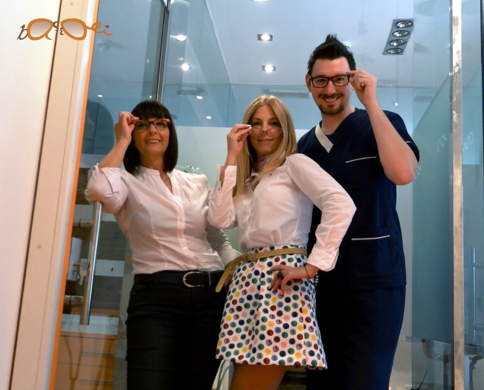
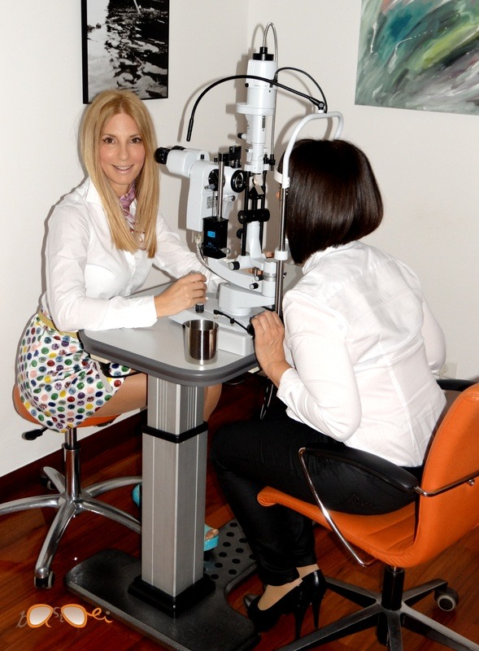
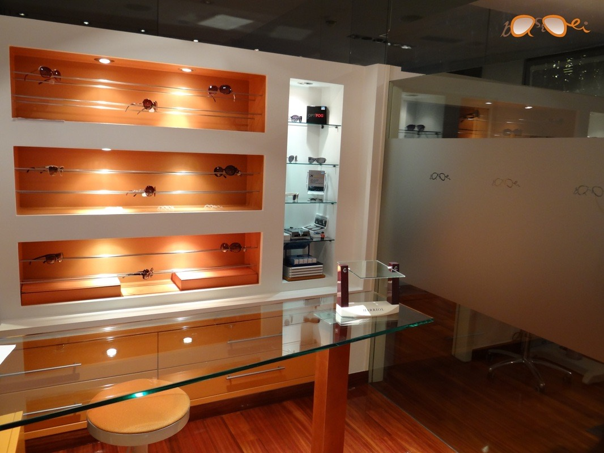
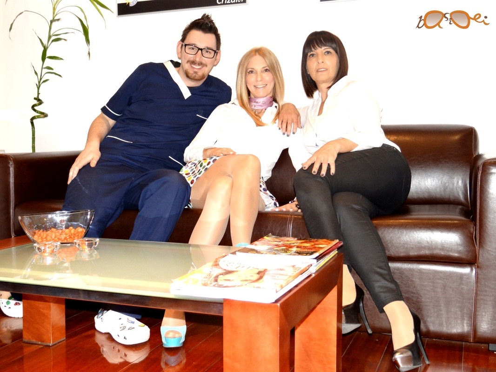
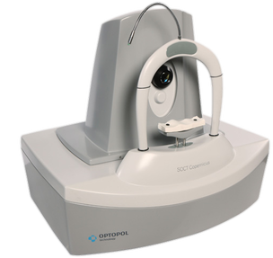
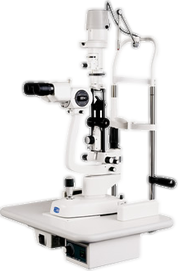
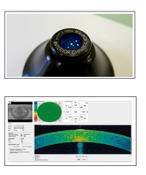
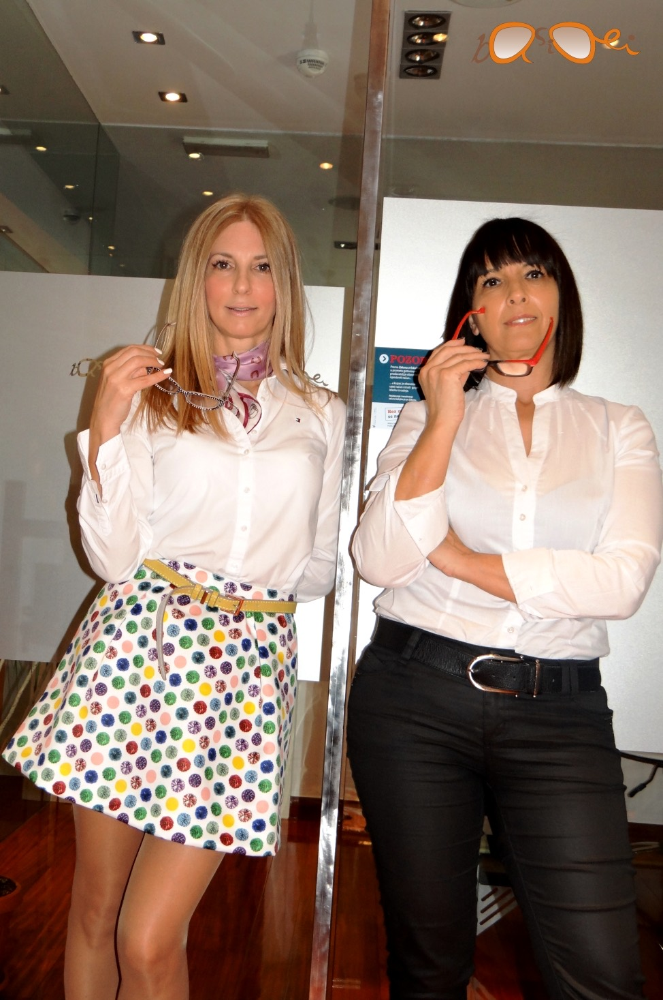

Povjeritesvoj vidu prave ruke.
Specijalistička oftalmološka ordinacija dr. Nikoline Basioli: kompletan pregled, dijagnostika, kontaktne leće i optika na jednom mjestu.



Pregled, dijagnostika i optika pod jednim krovom.
U Specijalističkoj oftalmološkoj ordinaciji dr. Nikoline Basioli očekuju vas ugodni pregledi u moderno uređenom i opremljenom prostoru.
Kod nas možete obaviti kompletan oftalmološki pregled i pregled za kontaktne leće, a zahvaljujući opremljenosti ordinacije i kompletnu glaukomsku i retinološku obradu. U ponudi su i dijagnostičke pretrage vidnog polja (Octopus) te OCT prednjeg i stražnjeg dijela oka.
U sklopu ordinacije nalazi se Optički atelje Basioli s dioptrijskim i sunčanim naočalama te kontaktnim lećama. Kompletna usluga na jednom mjestu.
Što uključuju pregledi
Iskustvo, stručnost i profesionalnost.
- 03.1
Pregled za naočale
Određivanje vidne oštrine i dioptrije.
- 03.2
Pregled za kontaktne leće
Dioptrija, fitanje leće i edukacija o pravilnom nošenju.
- 03.3
Autorefraktokeratometar
Objektivno mjerenje refrakcije i zakrivljenosti rožnice.
- 03.4
Procjepna svjetiljka
Biomikroskopija: pregled prednjih dijelova oka pod povećanjem.
- 03.5
Pregled očne pozadine
Pregled stražnjeg segmenta oka (fundusa).
- 03.6
Pregled vida u djece
Pregled vida za najmlađe pacijente.
Glaukomska i retinološka obrada u istoj ordinaciji.
- 04.1
Optička koherentna tomografija
OCT · SOCT Copernicus - 04.2
Kompjuterska perimetrija
Vidno polje · Octopus 300 - 04.3
Aplanacijska tonometrija
Očni tlak - 04.4
Pahimetrija
Debljina rožnice - 04.5
Testovi raspoznavanja boja
Ishihara

04.1SOCT Copernicus 04.2Octopus 300
04.2Octopus 300
03.4Biomikroskop
04.1OCT snimkaSve za vaš savršen vid, odmah nakon pregleda.

U ponudi su sunčane naočale, dioptrijski okviri i sunčane naočale s dioptrijom svjetski poznatih brendova.
Raspon dioptrijskih okvira kreće se od klasičnih do najnovijih trendova, a optičarka će vam pomoći odabrati okvir prema vašem licu, stilu i potrebama. U optici je i velik izbor kontaktnih leća, otopina za kontaktne leće i umjetnih suza.
- Naočalne leće
- Essilor, Hoya, Zeiss, Rodenstock
- Kontaktne leće
- J&J Acuvue, kompletan asortiman
- Ostalo
- Otopine, umjetne suze
Ordinacija u City Galleriji.
Izdvojene usluge. Iznosi u eurima prema cjeniku ordinacije (stanje 10. 9. 2026.).
Prije prvog pregleda.
Odgovori su sažeti iz opisa usluga i cjenika ordinacije.
Što uključuje kompletan oftalmološki pregled?
Pregled na autorefraktokeratometru, određivanje vidne oštrine na daljinu i blizu, određivanje dioptrije, mjerenje očnog tlaka, pregled prednjeg segmenta oka i staklovine te pregled stražnjeg segmenta oka (fundus).
Boli li mjerenje očnog tlaka?
Ne. Za aplanacijsku tonometriju koristi se kombinacija anestetika i floresceinske boje. Postupak ne boli, a anestetik se ispere kroz par sati.
Koliko košta osnovni pregled?
Osnovni specijalistički pregled iznosi 40 €, a ispitivanje vidne oštrine 20 €. Svih 45 stavki možete pretražiti na stranici Cjenik.
Naplaćuje li se nedolazak na dogovoreni termin?
Da. Prema cjeniku, nedolazak na dogovoreni termin pregleda naplaćuje se 50 €, a nedolazak na dogovorenu dijagnostičku obradu 100 €. Ako ne možete doći, javite se na vrijeme na 023 301 624.
Mogu li u optici kupiti kontaktne leće i otopine?
Da. Optički atelje Basioli nudi velik izbor kontaktnih leća poznatih brendova, otopina za kontaktne leće i umjetnih suza, uključujući kompletan asortiman Johnson & Johnson Acuvue.
Gdje se nalazite i kada radite?
U City Galleriji, Polačišće 2, Zadar. Ponedjeljak i srijeda 12:00 – 19:00; utorak, četvrtak i petak 08:00 – 15:00. Subotom i nedjeljom ne radimo.